Description
visNetReorder is supposed to visualise the multiple
graph colorings reorded within a sheet-shape rectangle grid
Usage
visNetReorder(g, data, sReorder, height = 7, margin = rep(0.1, 4), border.color = "#EEEEEE",
colormap = c("bwr", "jet", "gbr", "wyr", "br", "yr", "rainbow", "wb"), ncolors = 40,
zlim = NULL, colorbar = T, colorbar.fraction = 0.5, newpage = T, glayout = layout.fruchterman.reingold,
mtext.side = 3, mtext.adj = 0, mtext.cex = 1, mtext.font = 2, mtext.col = "black",
...)
Arguments
- g
- an object of class "igraph" or "graphNEL"
- data
- an input data matrix used to color-code
vertices/nodes. One column corresponds to one graph node
coloring. The input matrix must have row names, and these
names should include all node names of input graph, i.e.
V(g)$name, since there is a mapping operation. After
mapping, the length of the patern vector should be the
same as the number of nodes of input graph. The way of
how to color-code is to map values in the pattern onto
the whole colormap (see the next arguments: colormap,
ncolors, zlim and colorbar)
- height
- a numeric value specifying the height of
device
- sReorder
- an object of class "sReorder"
- margin
- margins as units of length 4 or 1
- border.color
- the border color of each figure
- colormap
- short name for the colormap. It can be
one of "jet" (jet colormap), "bwr" (blue-white-red
colormap), "gbr" (green-black-red colormap), "wyr"
(white-yellow-red colormap), "br" (black-red colormap),
"yr" (yellow-red colormap), "wb" (white-black colormap),
and "rainbow" (rainbow colormap, that is,
red-yellow-green-cyan-blue-magenta). Alternatively, any
hyphen-separated HTML color names, e.g.
"blue-black-yellow", "royalblue-white-sandybrown",
"darkgreen-white-darkviolet". A list of standard color
names can be found in
http://html-color-codes.info/color-names
- ncolors
- the number of colors specified over the
colormap
- zlim
- the minimum and maximum z/patttern values for
which colors should be plotted, defaulting to the range
of the finite values of z. Each of the given colors will
be used to color an equispaced interval of this range.
The midpoints of the intervals cover the range, so that
values just outside the range will be plotted
- colorbar
- logical to indicate whether to append a
colorbar. If pattern is null, it always sets to false
- colorbar.fraction
- the relative fraction of
colorbar block against the figure block
- newpage
- logical to indicate whether to open a new
page. By default, it sets to true for opening a new page
- glayout
- either a function or a numeric matrix
configuring how the vertices will be placed on the plot.
If layout is a function, this function will be called
with the graph as the single parameter to determine the
actual coordinates. This function can be one of
"layout.auto", "layout.random", "layout.circle",
"layout.sphere", "layout.fruchterman.reingold",
"layout.kamada.kawai", "layout.spring",
"layout.reingold.tilford",
"layout.fruchterman.reingold.grid", "layout.lgl",
"layout.graphopt", "layout.svd" and "layout.norm". A full
explanation of these layouts can be found in
http://igraph.sourceforge.net/doc/R/layout.html
- mtext.side
- on which side of the mtext plot
(1=bottom, 2=left, 3=top, 4=right)
- mtext.adj
- the adjustment for mtext alignment (0
for left or bottom alignment, 1 for right or top
alignment)
- mtext.cex
- the font size of mtext labels
- mtext.font
- the font weight of mtext labels
- mtext.col
- the color of mtext labels
- ...
- additional graphic parameters. See
http://igraph.sourceforge.net/doc/R/plot.graph.html
for the complete list.
Examples
# 1) generate a random graph according to the ER model
g <- erdos.renyi.game(100, 1/100)
# 2) produce the induced subgraph only based on the nodes in query
subg <- dNetInduce(g, V(g), knn=0)
# 3) reorder the module with vertices being color-coded by input data
nnodes <- vcount(subg)
nsamples <- 10
data <- matrix(runif(nnodes*nsamples), nrow=nnodes, ncol=nsamples)
rownames(data) <- V(subg)$name
sReorder <- dNetReorder(g=subg, data, feature="node",
node.normalise="none")
Start at 2014-04-02 15:25:36
First, define topology of a map grid...
Second, initialise the codebook matrix given a topology and input data...
Third, get training at the rough stage...
Fourth, get training at the finetune stage...
Next, identify the best-matching hexagon/rectangle for the input data...
Finally, append the response data (hits and mqe) into the sMap object...
Below are the summaries of the training results:
dimension of input data: 10x33
xy-dimension of map grid: xdim=6, ydim=6
grid lattice: rect
grid shape: sheet
dimension of grid coord: 36x2
initialisation method: linear
dimension of codebook matrix: 36x33
mean quantization error: 0.89674500723209
Below are the details of trainology:
training algorithm: sequential
alpha type: invert
training neighborhood kernel: gaussian
trainlength (x input data length): 36 at rough stage; 144 at finetune stage
radius (at rough stage): from 1 to 1
radius (at finetune stage): from 1 to 1
End at 2014-04-02 15:25:37
Runtime in total is: 1 secs
# 4) visualise the module with vertices being color-coded by input data
visNetReorder(g=subg, colormap="bwr", data=data, sReorder)

){kind=link}